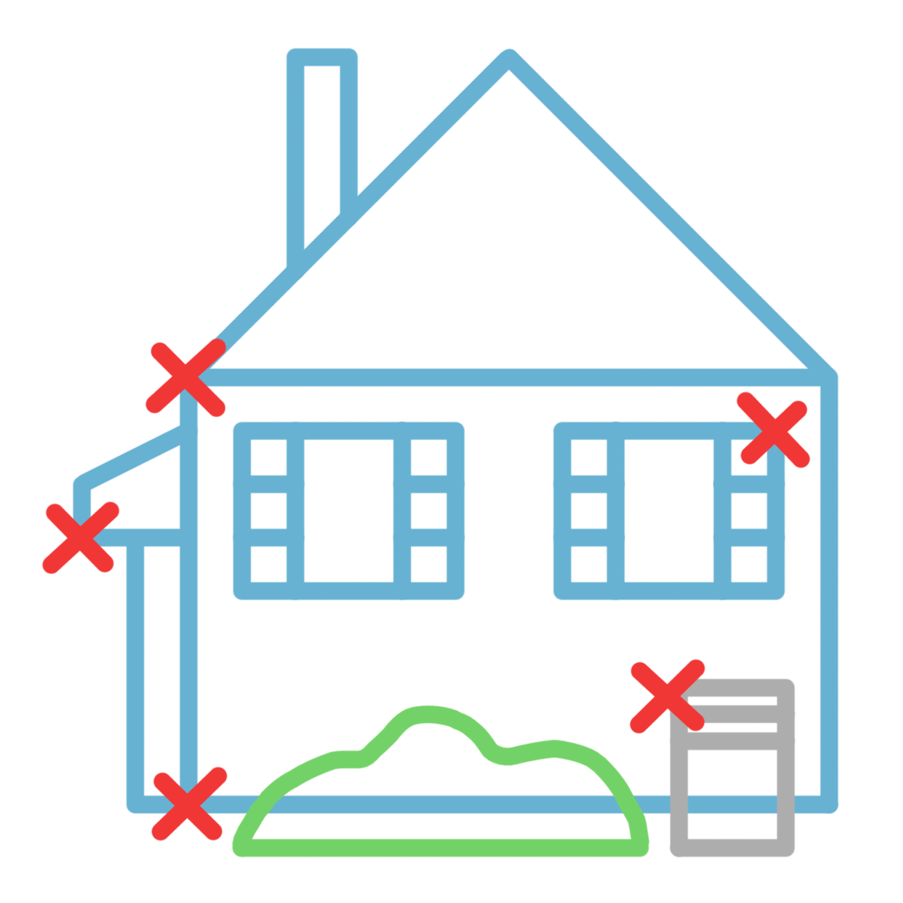

Mr bee at your service to assist in a pain free and easy extemination of problem pests
Call Now (262)-370-7036

Services
Preventative Treatment
 Our preventative treatment targets stinging insects that nest both inside and on the exterior of the home. This is a one time treatment done in the spring and early summer months to target the queens that begin nesting during those times. The technition uses a chemical dust to target the cracks and crevases of the standing structions on the customers property. A liquid may also be used in certain cercumstances if the customer requires it. This treatment is warrentied until the end of the calander year and covers the entire property in the case of ground or tree nests.
Nest Treatment
Customers may also choose treatment based on individual locations or nests. If the customer chooses this the price will fluctuate based on the type and number of nests they wish treated. Prevention is almost always the cheapest and most effective method for stinging insect control but not always possible considering the nature of these pests.
Nuisance Insect Treatment
These insects include ants, spiders, box elder bugs, asian lady beatles, and recently new to Wisconsin, stink bugs. The treatment involves spraying a liquid chemcial around the perimeter of the house and possibly other structures as well as high insect population problem areas. Treatment of these pests slightly varies depending on the time of year and sevarity. Some of these insects can be controlled with a one time treatment in the fall, while others are better controlled with monthly applications.
Pest Identification
asdfasd fasd fasdf asdf asdf asdf asdf asd fa sdf asdf asd fa sdf asdf as df asf
Service Area
We service a large part of Southeastern Wisconsin. Even if you think you are out of range, give us a call we can make exceptions.